Many equations are used by Sugars to calculate the mass and energy balances for a flow diagram. All material balance calculations maintain conservation of the total mass flow into and out of each station. Conservation of sucrose, non-sucrose, total flow and energy is maintained for every station and for the total factory by using iteration techniques to balance the flow of all material and energy from station-to-station within the flow diagram and for the overall factory. Iterations are continued until a balance is obtained within a relative convergence accuracy specified by the user (typically 0.01%).
The solubility of pure sucrose in water is calculated from the Vavrinecz equation that is the official equation adopted by the ICUMSA:
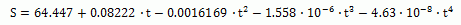
Where: S = weight % of sucrose in solution at saturation
t = temperature (°C) of solution
The saturation coefficient for a solution with impurities is calculated from the Vavrinecz function:
Where: NSW = non-sucrose to water ratio, and e = log base 2.71828...
And, 'a', 'b', and 'c' are coefficients that depend on the melassigenic substances in the flow stream being analyzed. Sugars uses the Vavrinecz saturation coefficient function for all calculations unless c = 0 is entered; in which case, the Wagnerowski equation is used:
The Wagnerowski equation is valid only in the range of 1.6 up to 3.5 non-sucrose-to-water ratio (NSW); hence, for low values of NSW, the Vavrinecz function is appropriate. As can be seen from the equations, the saturation coefficient is independent of temperature.
Supersaturation is defined by Van Hook's expression that is the official ICUMSA definition:

Where:
 is at the same temperature and with
the same non-sucrose-to-water ratio as the sample being analyzed.
is at the same temperature and with
the same non-sucrose-to-water ratio as the sample being analyzed.
The sucrose-to-water ratio for a solution at saturation is:
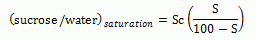
And,
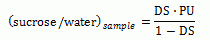
Where: DS = dry substance of syrup, PU = purity of syrup
For massecuites, DS and PU are the dry substance and purity, respectively, of the mother liquor in the massecuite (called DSml and PUml). Thus, from the above:
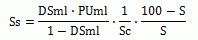
The non-sucrose to water ratio for any syrup is:
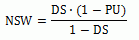
If the flow being analyzed is a massecuite containing crystalline sucrose, then the non-sucrose to water ratio is also:
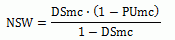
Where: DSmc = moisture free solids content of massecuite (i.e., DSmc = 1 - water fraction), and PUmc = purity of massecuite
In the above equations, and for all equations used by Sugars, DS (dry substance) values represent the total weight fraction of solids (sucrose and non-sucrose; that is, DS = 1 - water fraction), and purity values represent the true purity (that is, ratio of sucrose to total solids) in the flow stream.
All of the equations given above are used for either beet, or cane sugar. The only difference is with the Vavrinecz saturation coefficient function. Beet sugar companies use the Vavrinecz saturation coefficient function as shown above and many researchers have reported values for the 'a', 'b' and 'c' coefficients. Many beet sugar factories make an evaluation of these coefficients during each campaign; however, for cane sugar, modifying the coefficients to include consideration for the reducing sugar-to-ash ratio is usually necessary. For example, the saturation coefficient function for cane sugar is simplified to be the same as the Wagnerowski relationship for beet; that is,
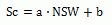
To consider the reducing sugar (RS) to ash (Ash) ratio, the 'a' and 'b' coefficients are modified to be:
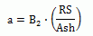
And,
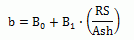
Values for B0, B1 and B2 can be found in the literature, or determined in the laboratory for the cane used in the factory being evaluated. Using the reactor station in Sugars, the process calculations can be adjusted for changes in the RS/Ash ratio as they occur in the process.
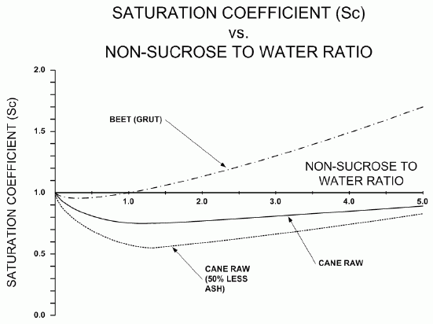
The above figure shows saturation coefficient curves that compare Grut saturation coefficient values for beets and typical cane saturation coefficients versus the non-sucrose to water ratio. As shown by the curve, the saturation coefficient for cane is lower than the beet Grut values at the same non-sugar to water ratio. Cane factories can obtain much lower molasses purity than beet factories because of this difference in solubility. The main reason for the lower saturation coefficient for cane is the higher invert content as compared with beet.
Also, as shown in the figure above, if ash is removed from cane juice, the saturation coefficient drops lower which will further reduce the molasses purity.
The sucrose solubility equations: NSW = f(DSmc, Pumc), S = f(t), Sc = f(NSW) & Ss = f(DSml, PUml, Sc, S), can be used to find a relationship between the dry substance and purity of the mother liquor in the massecuite; however, an additional equation is required to find their values.
From the above equation for supersaturation (Ss), an inverse relationship can be made between the mother liquor dry substance and purity that depends on the supersaturation (Ss), solubility coefficient (Sc) and saturation of a pure sucrose solution (S):
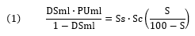
A second equation for solution of the DSml and PUml values can be obtained from the conservation of mass equations for a massecuite:
Where: W refers to weight flow rate and the subscripts 'mc', 'ml' and 'cs' refer to massecuite, mother liquor and crystalline sucrose, respectively.
From the above equations, it can be shown that:
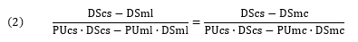
Normally, it can be assumed that the dry substance and purity of a sucrose crystal = 1.00; i.e., it is 100% solid and pure sucrose. From equations (1) and (2), the mother liquor dry substance and purity can be calculated for any massecuite in which the dry substance, purity, temperature and supersaturation are known. After the values for mother liquor dry substance and purity have been determined, the percent crystals in the flow may be calculated from the following equation.
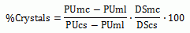
Conversely, if for any massecuite, the % Crystals are known, then the mother liquor dry substance and purity may be calculated from the following two equations.
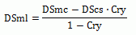 |
and, |
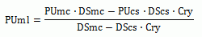 |
All of the above equations are used by Sugars to calculate the crystal content and mother liquor dry substance and purity for each flow stream.
Conservation of energy is maintained for the factory calculations by doing a heat balance on each station. The heat content of all flow streams feeding into a station is determined by calculating the heat capacities of each component in the liquid, solid and gas phases and then summing up all of the values to obtain the total heat content of the flow. A similar calculation is done for all output flows from each station.
Specific heat capacity equations are used by Sugars for each flow component in the flow stream except the combination of water, sucrose and non-sugars that are considered in unison to be syrup. The heat capacity of water vapor includes the latent heat of vaporization.
Specific heat capacity (kJ/kg-K) at constant pressure for syrups and sucrose crystals is calculated from the Sugar Technologists Manual, 8th edition, published by Bartens. For syrups the equation (341/3) is:
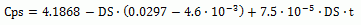
And, for sucrose crystals the equation (311/2) is:
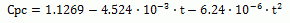
Where: for both equations, t = temperature (°C)
Curve fits have been made to the data for the specific heats of limestone and lime, as given in the book Chemistry and Technology of Lime and Limestone, by Robert S. Boynton.
Beet marc specific heat capacity is taken from the book Physics and Chemistry of Sugar Beet in Sugar Manufacture, by Konstantin Vukov.
Specific heat capacity algorithms for CO2 and NH3 gases have been taken from "Correlation Constants for Chemical Compounds", as published in Chemical Engineering, August 16, 1976.
Boiling point elevation is calculated for all stations that have a vapor flow out (pans, evaporators, etc.) so that the heat content of the vapor may be calculated. An equation developed by Kadlec, Bretschneider and Dandor, and presented in the November 1978 paper entitled, "Boiling Point Elevation of Sugar Solutions", is used for all boiling point elevation calculations. This equation was published in Vol. 97 of La Sucrerie Belge and it takes into consideration the dry substance, purity and ambient pressure of the solution being boiled.
Sugars uses an algorithm to solve for the ambient pressure of a vapor when its temperature is known. Therefore, if the temperature of the vapor out is known, the pressure can be calculated; or, if the temperature, dry substance and purity of the material flow out of the station is known, then Sugars uses iteration with the boiling point elevation equation to calculate the temperature and pressure of the vapor flow out of the station.
Centrifugal stations in the flow diagram are evaluated for: (1) their ability to purge centrifugal wash water and mother liquor; (2) the resultant loss of sugar crystals to the green (and wash for batch centrifugals) output flows; (3) the fraction of the crystal loss that is due to melting; and (4) the heat lost from each flow stream. Using procedures given in the previous Crystal Content discussion, Sugars will first determine the amount of mother liquor and sucrose crystals in the massecuite flowing to the centrifugal. Then from conservation of mass principles, the amount of mother liquor, sucrose crystals and wash water in the green and sugar output flow streams is determined. Next, the supersaturation of each output flow stream is determined. If the output flow stream is under saturated (Ss < 1), the crystals contained in the flow stream are melted until the flow is saturation with sucrose (Ss = 1), or all of the crystals have been dissolved. If the output flow stream is supersaturated (Ss > 1), the crystal content of the flow is not changed; that is, crystals are not grown in the centrifugal station. Finally, from the input values for the temperature of each output flow stream, the heat content is calculated and compared with the heat that flows to each output flow from the wash water, mother liquor and crystals purged to the respective output streams. A comparison between the two heat content values gives the heat loss for each output flow stream.
The resultant performance calculations provide an evaluation of the centrifugal used during simulations of the factory to predict how the station will process other massecuite at various flow rates and with different characteristics (e.g., with a different dry substance, purity, crystal content and temperature).
The evaluation by Sugars and the results for 2-Output centrifugals can be verified by the following equations for wash flow in as water instead of syrup (3-Output centrifugals are discussed later in this section). Definitions of the variables are given first.
Definition of variables:
Cry |
= |
fraction of crystals in the massecuite; |
R |
= |
weight ratio of centrifugal wash water to massecuite flow; |
Pw |
= |
wash purge ratio (wash water purged to total wash water used); |
Pl |
= |
liquor purge ratio (mother liquor purged to total mother liquor in massecuite); |
Z |
= |
crystal loss ratio (sucrose crystals lost to green to total sucrose crystals in massecuite - crystal loss may be due to both screen and melting losses); |
DSmc |
= |
dry substance of massecuite flowing into centrifugal; |
PUmc |
= |
purity of massecuite flowing into centrifugal; |
DSml |
= |
dry substance of mother liquor in massecuite; |
PUml |
= |
purity of mother liquor in massecuite; |
DSw |
= |
dry substance of wash flowing into centrifugal; |
PUw |
= |
purity of wash flowing into centrifugal; |
DSg |
= |
dry substance of green output flow; |
PUg |
= |
purity of green output flow; |
DSs |
= |
dry substance of sugar output flow; |
PUs |
= |
purity of sugar output flow; |
WRg |
= |
weight ratio of green output flow rate to massecuite input flow rate (kg/h); |
WRs |
= |
weight ratio of sugar output flow rate to massecuite input flow rate (kg/h); |
Wmc |
= |
weight flow rate of massecuite to the centrifugal (kg/h); |
Ww |
= |
weight flow rate of wash to the centrifugal (kg/h); |
Qw |
= |
wash water flow rate (m3/h); |
Sgw |
= |
specific weight of wash water (kg/m3). |
The centrifugal calculations do a material balance for the centrifugal using the dry substance and purity values that are entered on the performance evaluation screen. The material balance uses the following equations.
Weight balance:
Dry substance balance:
Sucrose balance:
If the wash is only water, then DSw = 0.0, and equations simplify to:
Now, dividing each of the above equations by Wmc, you get:
Where,
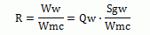
Using the centrifugal performance calculation results:
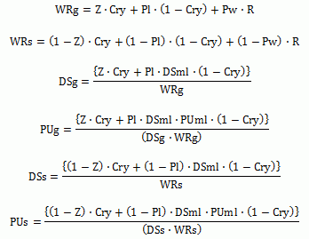
For example, consider the performance evaluation shown in the following three figures for a continuous centrifugal. The figure below shows the evaluation of massecuite flowing into the centrifugal. The massecuite characteristics are: supersaturation (Ss) equals 1.100, dry substance (DSmc) equals 93.00% (or .9300), purity (Pumc) equals 86.44% (or .8644) and temperature equals 81.0°C.
Results of the massecuite evaluation as shown above are: crystal content by weight (Cry) equals 47.44% (or .4744), mother liquor dry substance (DSml) equals 86.68% (or .8668) and the mother liquor purity (PUml) equals 72.32% (or .7232).
Below is the entry window for entering the process data from the centrifugal.
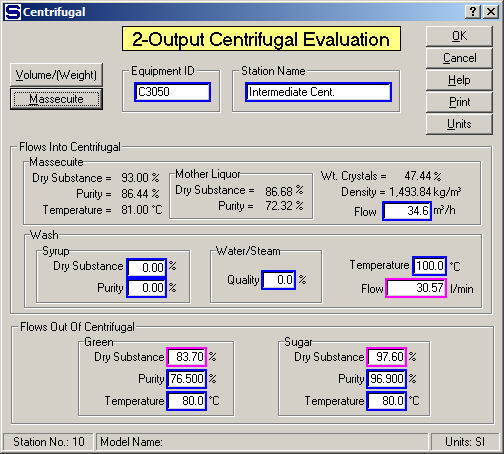
Data entry values shown on the window above are: green (or molasses) dry substance (DSg) equals 83.70% (.8370) and purity (PUg) equals 76.50% (.7650) and sugar dry substance (DSs) equals 97.60% (.9760) and purity (PUs) equals 96.90% (.9690). The centrifugal performance calculations are done from these entries and the temperatures of the green and sugar and the volume flow of massecuite and wash water into the centrifugal. The results of the performance calculations are shown below.
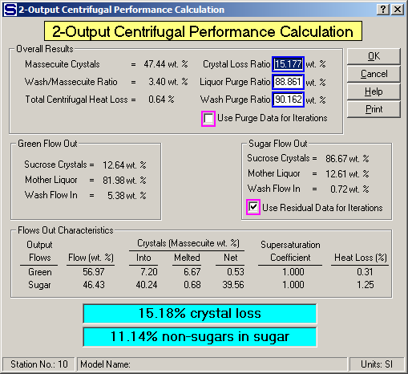
Using the input data and results from the evaluation shown on the previous windows using the appropriate equations, the mother liquor dry substance and purity can be calculated (assume DScs = PUcs = 1):
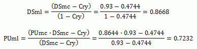
Or, the mother liquor % dry substance = 86.68, and % purity = 72.32 that agrees with the massecuite characteristics as calculated by Sugars. Thus,
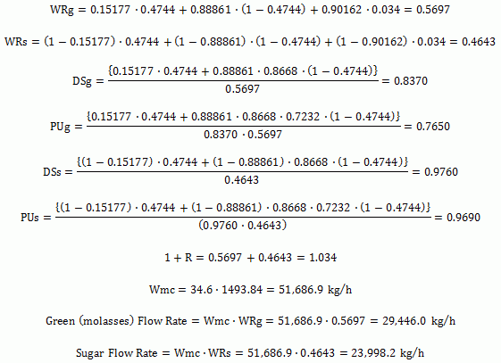
All of the above manual calculations check with the results from Sugars; thus, the results of the performance evaluation are verified.
The resultant flows from the centrifugal will be calculated as shown above if a different massecuite is fed to the same centrifugal having the above performance values for R, Pw, Pl and Z. The values of Z, Pl and Pw are not chosen as the values to be held during the balance calculations for this centrifugal (see the unchecked check box next to "Use Purge Data for Iterations" on the window above). However, because the sugar flow out sucrose crystals, mother liquor and wash flow in values are chosen to be held during the balance calculations, the crystal loss ratio (Z) will be used to find the crystal content for the sugar flow out, but the values of Pw and Pl will not be used. Hence, the sugar flow out will be composed of sucrose crystals, mother liquor and wash flow in as given by the centrifugal evaluation results shown on the window above. The percentage of mother liquor and wash in the sugar flow out will be held for the centrifugal station.
As can be seen from the previous example, the relationships between R, Pw, Pl and Z, for any given centrifugal station, are determined from actual observed operating results. These results are then used (if the check next to "Use Purge Data for Iterations" is checked) through the R, Pw, Pl and Z relationship to find new operating results for a centrifugal when processing different massecuites. Calculated values of R, Pw, Pl and Z can be plotted against each other and used as a guide to evaluate and rate each centrifugal in a factory and to compare them with other factories. For example, plots of Pl vs. Z at various values of R, and Pl and Z vs. R, provides very valuable information regarding how each centrifugal performs. Obviously, the characteristics of a massecuite will affect the centrifugal performance. Therefore, the best comparisons are obtained when the same massecuite is being processed by all centrifugals under evaluation.
Operating results for a factory with variable centrifugal wash water flow rates can be evaluated by Sugars if laboratory data has been taken and the centrifugal station has been analyzed for more than one wash water flow rate while the same massecuite is being processed. For instance, two sets of values for Pw, Pl, Z and R can be easily obtained by taking laboratory data when the wash water is set to a known value (Qw > 0) and then taking a new set of data when the water is reduced to zero (Qw = 0). The variations of Pw, Pl and Z with R can be assumed as linear or additional data at various wash water flow rates can be taken to verify the actual relationships and graphs can be drawn similar to those shown below.
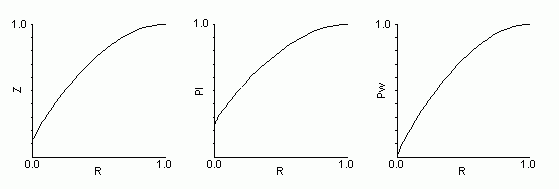
Using these graphs, new values can be determined for Pw, Pl and Z when the wash water flow (R) is varied. The new values are then entered into Sugars for the centrifugal being evaluated by using the "F3=Edit feature of the centrifugal performance evaluation. Sugars will then calculate new values for DSg, PUg, DSs and PUs. Next, enter the new wash water flow rate on the centrifugal data entry window with the new values of DSg, PUg, DSs and PUs. Enter 0.0 for either the green %DS, or sugar %DS, and accept the new values by clicking on the OK button. Sugars will calculate the %DS value that was not selected. Or, if an error is given by Sugars, revising the %DS value entered for either the green, or sugar, may be necessary until Sugars can calculate the other %DS at the new wash water flow rate. After the green and sugar %DS values are calculated at the new wash water flow rate, Sugars will calculate and display the new centrifugal performance. If the calculated centrifugal performance does not agree with the values from the curves, repeating the entry of centrifugal performance values and green and sugar %DS values may be necessary until agreement is reached.
The balance calculations can be redone by Sugars after the new centrifugal performance values are entered for the new wash water flow. The results from the Sugars calculations can then show the effect on the process from changing wash water flow rates in any of the centrifugal stations by using the above technique.
Wash flow into the centrifugal can be syrup instead of water and the same procedures as described above can be used to evaluate the effect of different syrups on the performance of a centrifugal station. Graphs similar to those shown above can be created from actual test results at different syrup flow rates and characteristics and these graphs can then be used to evaluate how different syrup flows would affect the operation of the process.
3-Output (batch) centrifugals with green, wash and sugar output flows are evaluated in exactly the same manner as previously discussed for 2-Output (continuous) centrifugals except that an additional evaluation is made for the split between the green and wash flows. For example, consider the 3-Output centrifugal input data and performance evaluation shown below.
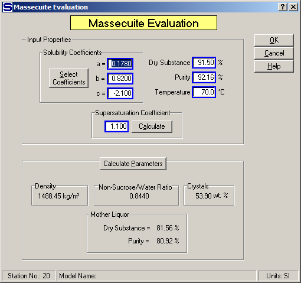
The above window shows the massecuite evaluation for a 3-Output (batch) centrifugal that is the same evaluation as is done for a 2-Output (continuous) centrifugal. Next, the centrifugal data is input as shown in the figure below. Data is entered for three output flows are; i.e., "green", "wash" and "sugar".
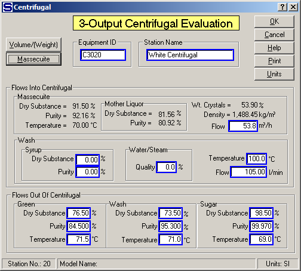
Performance calculations are shown for the 3-Output centrifugal in the figure below. The performance evaluation results for the 3-Output centrifugal are the same as for the 2-Output centrifugal except for the additional wash output flow stream and the green/wash split that occurs between the green and wash flows. The green wash split can be edited as shown in the 3-Output Centrifugal Evaluation section.
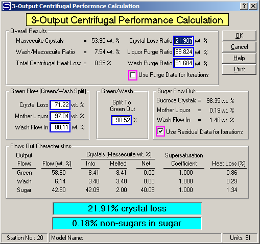
Equations for the green and wash flows are:
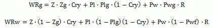
The Green/Wash Split, wt. % values are represented by the Zg, Plg and Pwg values from the centrifugal evaluation as shown on the above window. Similar equations to those shown above can be developed for the dry substance and purity of the green and wash flows.